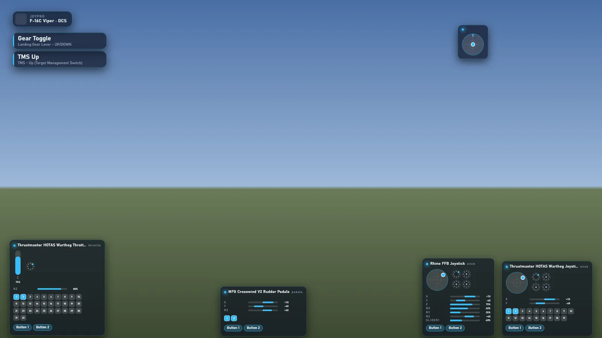

#Bindirmeyi aç/kapat
Düğmeyazıldı“HUD'u başlat” / “HUD'u durdur”: HUD'u yukarıda işaretli çıkışlarla başlatır: gerekirse cihazları okur, çalışan oyunu bulur ve atamalarını yükler.
Yeniden basılırsa tüm çıkışları kapatır.
HUD, oynarken cihazlarınızı ekranda gösterir; bir yayıncının denetleyici bindirmesi gibi: kol resmi kolunuzla birlikte eğilir, levyeler ve eksenler çubuk olarak hareket eder, basılı tutulan düğmeler adlarıyla yanar ve bir satır, basılan düğmenin çalışan oyunda ne yaptığını söyler (“Gear Toggle”). Oyunun üstünde, OBS'te veya her ikisinde, her biri kendi parçacıklarıyla gösterilebilir. Bu sayfa onun tasarlayıcısıdır.


flowchart LR D["Cihazlarınız"] --> P["HUD"] O["Oyundaki<br/>atamalarınız"] --> P P --> S["Ekranımda"] P --> B["OBS için sayfa"] P --> W["Yayın penceresi"]
HUD'u durdur (aynı düğme) onu kapatır. Burada ayarladığınız her şey saklanır ve yeniden başlattıktan sonra da yerindedir.
Bir parçacığı taşımak için önizlemede sürükleyin; sağda değiştirmek için ona tıklayın. Otomatik düzenle onları alta dizer: gaz kolu ve sol el cihazları solda, pedallar ortada, sağ el kolu sağda.


HUD penceresi saydamdır ve pencereli ve kenarlıksız oyunların üstünde kalır. Tıklamalar içinden geçerek oyuna ulaşır. Görev çubuğunda veya Alt+Tab'da görünmez. Özel tam ekran onu gizler (bir Windows sınırlaması): oyunu kenarlıksız moda geçirin. Basılan düğmenin satırı, o oyunun ve uçağın eylemini adlandırır; örneğin F-16C'de “Weapon Release”, IL-2'de “Fire guns”.
Üç çıktı birbirinden bağımsızdır:
| Çıktı | Kimin için | Nasıl |
|---|---|---|
| Ekranımda (oyunun üstünde) | siz | oyunun üstünde saydam bir pencere |
| OBS sayfası (Tarayıcı kaynağı, saydam) | yayınınız (önerilen) | JoyPro yalnızca bu bilgisayar için bir sayfa sunar; Kopyala adresini panoya koyar |
| Yayın penceresi (Pencere Yakalama) | Pencere Yakalama ile yayınlar | saydam veya chroma key arka planlı normal bir pencere (oyunun arkasında kalabilir) |
Yayın HUD'u göstermeye devam ederken temiz bir ekranla oynamak için Ekranımda seçeneğinin işaretini kaldırın ya da her birinde farklı parçacıklar gösterin: her parçacığın iki işareti vardır, bir monitör (ekranınız) ve OBS (yayın). Önizleme: Ekranım / Yayın tasarımcının ne göstereceğini değiştirir. Saniyede en fazla güncelleme (15, 30 veya 60; 30 akıcı ve hafiftir).
http://127.0.0.1:8765/hud) yanındaki Kopyala'ya basın.Sayfa, yayın için işaretli parçacıkları uygulamadakiyle aynı yerlerde ve stillerde, kaynağa göre ölçeklenen 1920 x 1080'lik bir sahnede çizer. Port başka bir program tarafından mı kullanılıyor? Port altında başka birini seçin ve adresi yeniden kopyalayın.


Bunun yerine Pencere Yakalama: Yayın penceresi'ni işaretleyin, arka planı seçin (saydam, yeşil, macenta, mavi veya kendi renginiz). OBS'de Capture Method: Windows 10 (1903 and up) ile Window Capture ekleyin; bir renk kullanıyorsanız o renkte bir Chroma Key filtresi ekleyin. Saydam bir arka plan OBS'nizde siyah görünüyorsa Tarayıcı kaynağını veya bir rengi kullanın.
OBS Tarayıcı kaynağı HUD'u nasıl alır: bir sayfa, ardından yalnızca değişiklikler.
| # | Kim | Ne olur |
|---|---|---|
| 1 | OBS | Tarayıcı kaynağı http://127.0.0.1:8765/hud adresini açar. |
| 2 | JoyPro | Sayfayı gönderir: yerleşim, stiller ve resimler. |
| 3 | OBS | /hud/events adresini açar. Açık kalır. |
| 4 | JoyPro | Durumu (eksenler, düğmeler, düğmenin ne yaptığı) gönderir; saniyede en fazla 30 kez ve yalnızca bir şey değiştiğinde. |
| 5 | JoyPro | Bileşenler, yerler veya stiller değişince yerleşimi yeniden gönderir. |
Parçacıklar, her cihazı ve ayrıca başlığı, atama şeridini ve uçak parçacığını listeler. Cihazları yeniden yükle bağlı cihazları yeniden okur; Tümünü göster ekranınız için her parçacığı işaretler; Otomatik düzenle ve Yerleri sıfırla onları yerlerine koyar.
Parçacık başına (önizlemede veya listede ona tıklayın):


Uçak parçacığı: kol, gaz kolu, gaz hareketi çubuğu, kol konumu, yanan kontroller, adıyla basılı tutulan kontroller; Uçak (Otomatik: uçtuğunuz uçak veya bu bilgisayarda ayarlanmış herhangi bir resim) ve Hareket kaynağı (onu hareket ettiren kol ve gaz kolu). Resimleri oyunun kendi kokpit resimlerinden gelir (Kokpitler > Oyunlarımdan resim oluştur veya bir resim paketi), yoksa JoyPro'nun gerçek tutamağı gösteren çizgi çizimi kullanılır.
Stil'de 40 hazır ayar vardır: Cam, Neon, Minimal, sade olanlar (Buzlu cam açık, Yayıncı sade, Yayıncı belirgin, Kompakt, Büyük yazı, Pastel, Yalnızca dış çizgi), kokpit ekranları (Askeri yeşil HUD, Kehribar MFD, Yolcu uçağı PFD, Cam kokpit, Gece görüşü, Kırmızı kokpit aydınlatması, Vektör tel kafes, Retro terminal, Warbird, Hologram), oyunlar ve türler (Uzay simülasyonu turuncu, Holo camgöbeği, Siberpunk, Synthwave, Neon pembe, Yarış, Taktik kum rengi, Lacivert ve altın, Stealth, Hayalet), renk temaları (Arktik, Çöl, Okyanus, Gün batımı, Kraliyet, Karbon) ve okunabilirlik (Yüksek karşıtlık, Yüksek karşıtlık açık, Tek renk, Tek renk açık). › bir sonrakine geçer.


Aşağıda: tek tıkla vurgu renkleri, Vurgu, Basılı ve Opaklık, ardından öğe başına tasarım seçenekleri: Kartlar (arka plan, kenarlık, köşeler, gölge), Metin (yazı tipi, boyut, harf aralığı, renkler, Kalın adlar), Çubuk öğesi (halka, kare, artı imleç, radar, nokta; boyut, parlama), Çubuklar ve kollar (şekiller, yükseklikler, boş kısım) ve Düğmeler ve etiketler (şekiller). Değiştirilen bir seçenek stili "Özel tasarım (değiştirildi)" yapar: Stili kaydet onu sizin verdiğiniz adla saklar, Değişiklikleri geri al hazır ayara döner, Stili dışa aktar... / Stili içe aktar... onu bir dosya olarak paylaşır, Sil kendi stilinizi kaldırır.
Düğmenin yaptığı iş: kaç satır, ne kadar kalacakları (saniye), yazı boyutu, Cihazı ve düğmeyi göster ve Yalnızca bir oyun çalışırken. Tıklama geçirgen, fare tıklamalarının HUD penceresinden geçmesini sağlar (HUD başladığında uygulanır).
JoyPro çalışan oyunu sürecinden bulur (DCS, IL-2, Star Citizen ve desteklediği diğer her oyun) ve yalnızca o oyunun atamalarını gösterir. DCS uçağı da bilmek ister: onu DCS uçağı altında seçin ya da DCS'nin her görev başlangıcında uçağı JoyPro'ya bildirmesi için DCS kancasını yükle'ye basın (küçük bir Lua dosyası ve Export.lua içinde korumalı tek bir satır; önce yedeklenir; Kaldır dosyayı bayt bayt geri koyar; önce DCS'yi kapatın). Denetle, kancanın yüklü olup olmadığını söyler.


Görünüm modeli: MainWindowViewModel.Hud.cs (cihazlar, parçacıklar, yerleşim), MainWindowViewModel.HudStyles.cs (hazır ayarlar, kendi stilleri, içe/dışa aktarma), MainWindowViewModel.HudStream.cs (çıktılar, yayın sayfası, uçak parçacığı), MainWindowViewModel.HudAxes.cs (çubuk eksenleri), MainWindowViewModel.Overlay.cs (başlat/durdur, çalışan oyun, düğme satırları, DCS kancası). Görünümler: Views/HudWindow.axaml, Views/Controls/HudSurface.axaml, HudElements.cs, HudPanel.cs. Hazır ayarlar: Models/HudStylePresets.cs.
engine hud devices her bağlı cihazın modelini, türünü, elini, ürün resmini, rolleriyle eksenlerini, adları ve kontrol kimlikleriyle düğmelerini (Controls, uçak parçacığı için) ve düğme konumlarıyla yerleşim resmini verir.engine overlay map (--game, --plane, --unit): değiştiricileri ve başlıklarıyla atanmış düğmeler. Değiştiricili bir atama, değiştiricileri basılı tutulurken gösterilir; en çok eşleşen değiştiriciye sahip atama kazanır.engine overlay dcs-hook status / install / remove (--path, --dry-run): Scripts\JoyProOverlay.lua ve Export.lua içinde pcall ile sarılmış tek bir satır; DCS birim türünü 127.0.0.1:1992 adresine (UDP) gönderir. Kanca, yerini aldığı diğer betiklerin (SRS, Tacview) dışa aktarma işlevlerini çağırır.Services/HudStreamServer.cs, HudStreamHub.cs, Resources/hud-stream.html; yalnızca 127.0.0.1'e bağlıdır, başka bir ana bilgisayar adıyla gelen istekler reddedilir. GET /hud (sayfa), /hud/events (Server-Sent Events: layout, state), /hud/img/<id> (PNG olarak resimler), /hud/state (JSON). Bağlı bir sayfa yokken yalnızca dinler.Services/HudInputPump.cs her cihaz için yalnızca en yeni raporu tutar ve bunları seçilen hızda uygular; öğeler yalnızca değişiklikte yeniden çizilir; rapor başına hiçbir bellek ayrılmaz; resimler bir kez kesilir (uçak tutamakları 480 px yüksekliğinde). HUD dayanıklılık testiyle CPU, bellek ayırma ve bellek bütçelerine karşı ölçülür.%APPDATA%\JoyPro2\hud.json (yerler, boyutlar, ekran ve yayın için parçacık başına işaretler, tüm seçenekleriyle stil, kendi stilleriniz, çıktılar, port, arka plan, güncelleme hızı). Stil dosyaları: *.joypro-hudstyle.json ("format": "joypro-hud-style").Başvuru: hud.
Bu sayfanın arkasındaki, depodan oluşturulan özellik belgeleri:
42 denetim, programın kaynak kodundan okundu: 42 yazıldı, 0 kaynaktaki bilgilerle (araç ipucu, kod yorumu, motor çağrısı), 0 henüz genişletilecek.
“HUD'u başlat” / “HUD'u durdur”: HUD'u yukarıda işaretli çıkışlarla başlatır: gerekirse cihazları okur, çalışan oyunu bulur ve atamalarını yükler.
Yeniden basılırsa tüm çıkışları kapatır.
Araç ipucu Oyunun üstündeki saydam HUD. Yayın HUD'u göstermeye devam ederken kendi ekranınızı temiz tutmak için işaretini kaldırın.
HUD'u oyunun üstünde saydam bir pencere olarak gösterir.
Yayın HUD'u göstermeye devam ederken kendi ekranınızı temiz tutmak için işaretini kaldırın.
Araç ipucu JoyPro, HUD'u yalnızca bu bilgisayarda bir web sayfası olarak sunar. OBS'te bu adresle bir Tarayıcı kaynağı ekleyin: arka plan saydamdır, özel CSS gerekmez.
HUD çalışırken JoyPro onu yalnızca bu bilgisayarda, bir OBS Browser Source için web sayfası olarak sunar: saydam arka plan, özel CSS yok.
İşaretliyse, “Kopyala” ile adres ve “Port” aşağıda görünür.
OBS sayfasının adresini panoya kopyalar.
OBS'te: Sources > + > Browser, adresi URL olarak yapıştırın, genişlik 1920, yükseklik 1080.
Araç ipucu Ayrı bir pencere, en üstte değil: oyunun arkasında durabilir. OBS'te: yakalama yöntemi Windows 10 (1903 ve üzeri) olan Pencere Yakalama; chroma key rengi seçiliyse bir Chroma Key filtresi ekleyin.
HUD çalışırken OBS'in Window Capture'ı için kendine ait bir pencere açar; arka planı saydamdır veya aşağıda seçilen bir chroma key rengidir.
OBS'te: yakalama yöntemi Windows 10 ve bir renk için Chroma Key filtresi.
Listedeki bir parçacığın monitör işareti: onu ekranınızda gösterir.
Listedeki bir parçacığın OBS işareti: onu yayında gösterir.
Bağlı cihazları yeniden okur: yeni cihazlar bir parçacık alır, resimler ve düğme adları yenilenir.
Bir cihaz taktıktan sonra kullanın.
Ekranınız için her parçacığı işaretler. İstemediklerinizin listede işaretini kaldırın.
Araç ipucu Gaz kolu ve sol el solda, pedallar ortada, sağ el kolu sağda, altta boyunca
Ekranınızda gösterilen cihaz parçacıklarını alt kenar boyunca yerleştirir: gaz kolu ve sol el cihazları solda, pedallar ortada, sağ el kolu sağda; sığmayanlar bir sıra yukarı gider.
Yeni yerler saklanır.
Her parçacığı varsayılan yerine ve boyutuna geri koyar; her parçacığın gösterdiği şey kalır.
Araç ipucu Sonraki stil
HUD'u “Stil” listesindeki sonraki girdiye geçirir.
Stile bu vurgu rengini verir. HUD bunu hemen alır; siz kaydedene kadar stil "Özel tasarım" olarak görünür.
Parçacıkların adlarını kalın gösterir. Stilin bir parçasıdır: kaydedilene kadar stili "Özel tasarım" yapar.
Şu anki tasarımı, yanına yazılan adla kendi stiliniz olarak saklar ve onu HUD'un stili yapar.
Bir hazır ayarın adı reddedilir; aynı adlı kendi stilinizin yerine geçer.
Bir stil dosyasını okur ve onu stillerinizden biri ve HUD'un stili yapar.
Zaten kullandığınız bir ad bir numara alır.
Şu anki tasarımı paylaşmak veya saklamak için bir stil dosyası olarak kaydeder; HUD değişmez.
Araç ipucu Yukarıda seçilen stile dön
Tasarımı, elle yapılan değişikliklerden önceki stilinize geri getirir: en son seçilen, kaydedilen veya içe aktarılan stil.
Seçilen kendi stilinizi siler. Onu kullanan parçacıklar HUD'un stiline döner; HUD şu anki görünümünü korur.
“Düğmenin yaptığı iş”in her satırının altına cihazı ve düğmeyi ekler.
“Düğmenin yaptığı iş” satırlarını yalnızca desteklenen bir oyun çalışırken gösterir; kapalıyken masaüstünde de gösterir.
Fare tıklamaları HUD penceresinden geçerek oyuna gider.
HUD başlarken uygulanır: bunu değiştirdikten sonra HUD'u durdurup yeniden başlatın.
DCS hook'unu yükler: Scripts\JoyProOverlay.lua ve Export.lua içinde korumalı tek bir satır.
Önce DCS'i kapatın.
DCS hook'unu yeniden kaldırır: Export.lua bayt bayt eskisi gibi olur.
Önce DCS'i kapatın.
DCS hook'unun “Ayarlar”daki DCS klasörüne yüklenip yüklenmediğini denetler.
Hiçbir şeyi değiştirmez.
“Ekranım” / “Yayın”: tasarımcının önizlemesinin ne gösterdiği; ekranınız için işaretli parçacıklar mı, yayın için işaretli olanlar mı.
Yalnızca önizleme değişir; seçim bir sonraki başlatma için saklanır.
Seçili parçacığı ekranınızda gösterir.
Seçili parçacığı yayında gösterir: OBS sayfasında ve yayın penceresinde.
Cihazın adını parçacığında gösterir.
Oyun başlığı parçacığı: oyunun veya DCS uçağının resmini adının yanında gösterir.
Cihazın türünü adının altında gösterir.
Cihazın resmini gösterir.
Cihaz resmini, gerçek kol hareket ediyormuş gibi kolla birlikte eğer ve döndürür.
Cihaz parçacığı: basılı tutulan düğmeler yanar. Uçak parçacığı: bastığınız düğmenin karşılık geldiği uçak kontrolü, uçağın kolunda veya gaz kolunda yanar.
Cihaz parçacığı: basılı tutulan düğmeler, cihaz kataloğundaki adlarıyla küçük etiketler olarak görünür.
Uçak parçacığı: uçağın basılı tutulan kontrolleri, tutamakların altında adlarıyla.
Cihaz parçacığı: her eksen ve kol bir çubuk olarak hareket eder.
Uçak parçacığı: gaz kolunun yanında kolunuzun konumunu gösteren bir çubuk.
Her eksenin adını çubuğunun yanına yazar.
Her eksenin değerini çubuğunun yanına yazar.
Çubuk öğesini gösterir: kolun konumunda bir halka içinde bir nokta, dönüş için bir çentik işaretiyle.
Hat'leri gösterir; basılan yön yanar.
Uçak parçacığı: uçağın kendi kol resmini gösterir; resim kolunuzla birlikte eğilir.
Uçak parçacığı: uçağın kendi gaz kolu resmini gösterir; resim gaz kolunuzun ilk koluyla birlikte kayar.